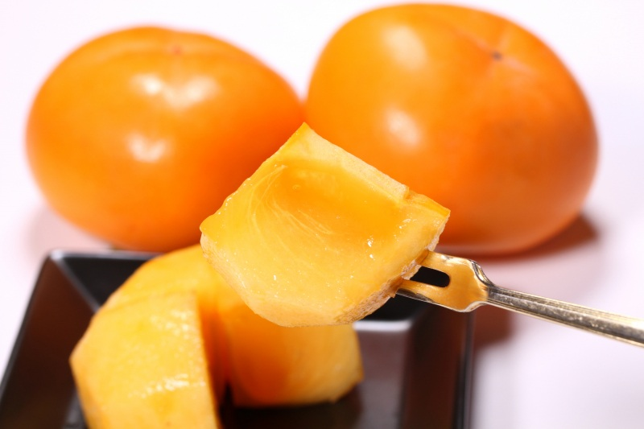
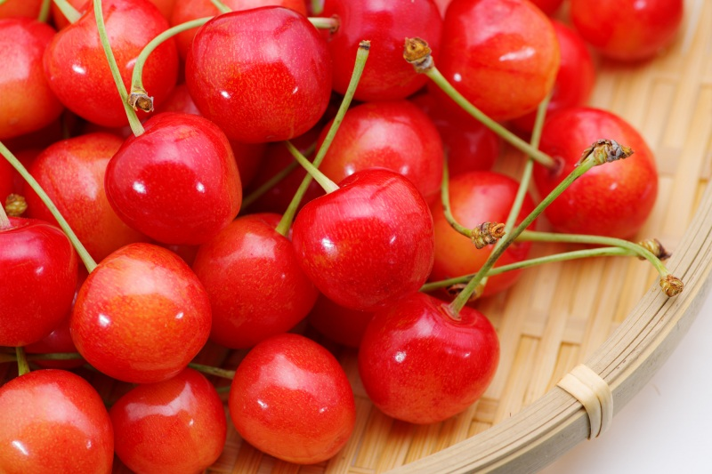
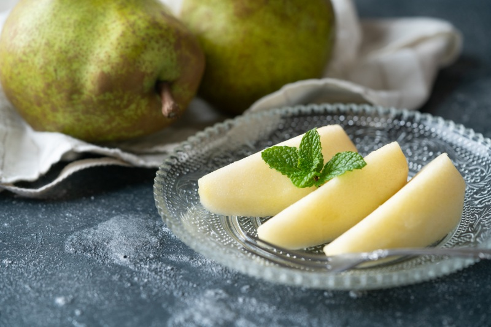
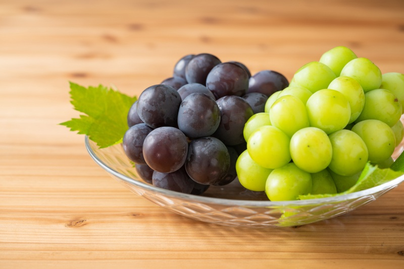
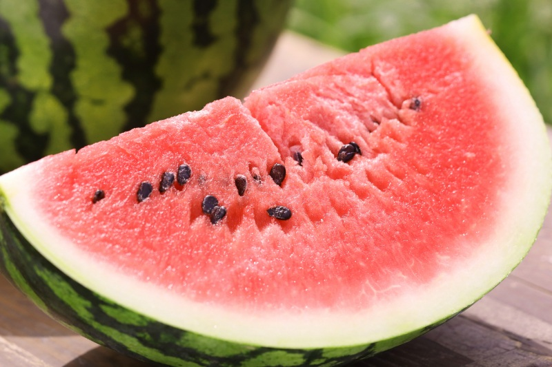
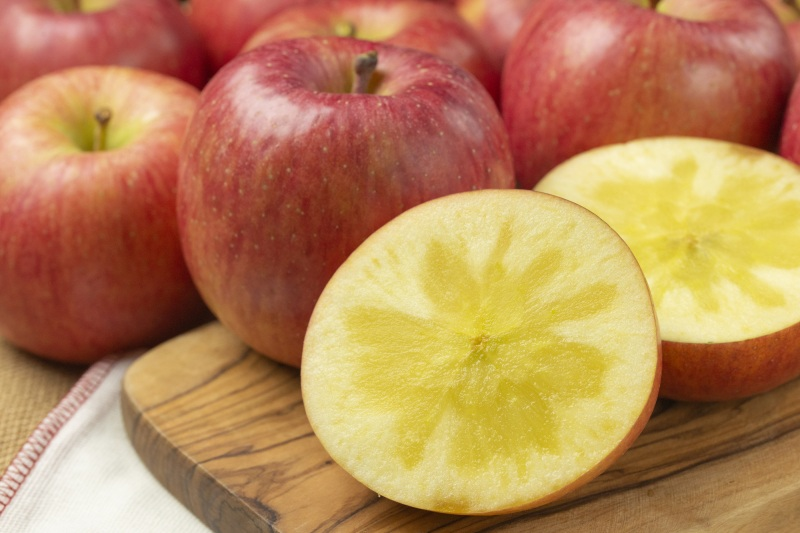
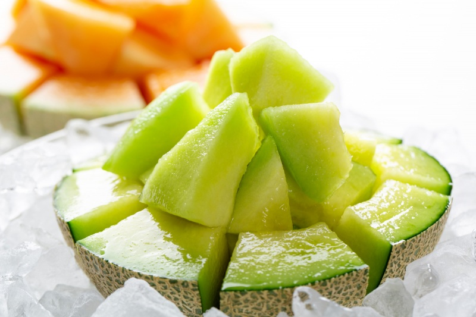

山形水果
フルーツ\fruit
山形水果介紹
 山形縣內栽種的水果種類豐富，產量也是日本屈指可數，因此享有「水果王國」的美譽，佐藤錦櫻桃、庄内柿子等等，都出自於山形縣，在地的店家們也大量地使用縣內的當季水果搭配各種甜點，不只賣相極佳、水果的新鮮度及點心們的滋味更是深入人心!
山形水果推薦
櫻桃
 有「紅寶石」之稱的最高級櫻桃「佐藤錦」，果肉緊緻飽滿、口感軟嫩，咬下的瞬間口中便充滿甘甜氣息。每顆櫻桃都散發出亮眼光澤，無論味覺或視覺都是至高無上的享受。 山形縣櫻桃在日本國內的佔有率高居第一，每年6月上旬到7月中旬左右可以體驗採櫻桃的樂趣。不同品種的櫻桃產季也不同，可以事先聯絡農園洽詢。
西洋梨
 西洋梨在山形縣的收穫量為日本第一，若將櫻桃比喻成水果王國的國王，那西洋梨肯定就是皇后。 想品嘗美味的西洋梨，最重要的是分辨果肉熟不熟。剛採下來的西洋梨硬又不甜，等放置一段時間直到芯的周圍開始產生摺痕時，代表果肉甜味遽增、好吃程度大幅提升，就可以享用了。高雅的香氣和軟軟的果肉，吃一口就著迷！
山形的高級葡萄
 山形也是葡萄的熱門栽種地。除了常見的小顆鮮甜品種外，更有其他種類豐富的葡萄可以品嘗。 碧綠色的「晴王麝香葡萄」大顆無籽，還能連皮一起吃，非常受歡迎，是高級葡萄禮品的首選。 「貓眼葡萄」有黑珍珠的別名，大粒果肉彈牙無籽、口感十足，優點是非常容易保存。
尾花澤夏季西瓜
 炎炎夏日，吃西瓜消暑解渴！紅色果肉、爽脆鮮甜又多汁，美味的「尾花澤夏季西瓜」是日本數一數二的西瓜品種，更是度過日本酷暑的最佳配方。 從西瓜蘇打到西瓜果凍、醃漬西瓜、西瓜葡萄酒等各種新奇有趣的西瓜加工品，讓您盡情挑選最特別的伴手禮。
蜜蘋果
 由於環境適宜，生產出來的蘋果多蜜美味，讓山形縣成為不為人知的蜜蘋果名產地。 發源自山形縣朝日町的品種「無袋富士」，果肉飽含大片透光糖蜜，絕品的美味被譽為日本第一。如此夢幻逸品，一生至少要吃上一次！
庄內哈密瓜
 庄內砂丘是日本首屈一指的哈密瓜產地，收穫期在6月下旬到8月上旬，最佳季節在7月上旬到7月下旬，有時甚至會舉辦哈密瓜吃到飽的採瓜體驗活動。品嘗現採的高級哈密瓜，享受多汁又甜美的奢侈滋味。
總結
山形縣栽培出各式各樣新鮮多汁的水果，收穫時期依種類而異，因此一年四季都能體驗到現採現吃的樂趣。快來水果王國山形挑戰採收水果吧！